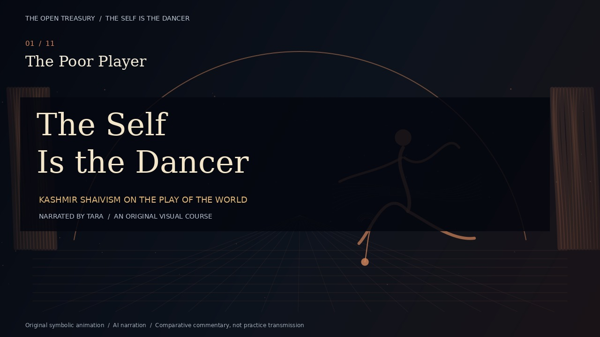

The Self Is the Dancer
Kashmir Shaivism on the play of the world.
Macbeth calls life a poor player. Three Shaiva aphorisms answer with a dancer, a stage, and spectators. Eleven chapters on freedom, Spanda, reflection, the five acts, delight, suffering, and recognition. Metaphysical identity is not human consent to harm.
Selected source readings and an original comparative argument, not a claim that these traditions teach one doctrine. The strongest objection gets its own hearing: no one may tell another person that their pain is merely a game.
Chapters
- 00:00 - The Poor Player
- 03:10 - The Sutras on the Rock
- 06:51 - Absolute Freedom
- 10:39 - The Throb
- 14:26 - The Mirror
- 17:05 - The Five Acts in Your Chest
- 20:42 - The Theatre Sutras
- 26:43 - The Magic Show Is a Playbook
- 30:23 - The Objection: If the Self Is the Actor, Why Does It Hurt?
- 35:07 - Learning to Watch
- 38:45 - Recognition Is the Safeword
Sources and complete script
Source, edition, rights and audio notes
Complete spoken script
Rights and narration
Kaul's 1925 translation and modernized Macbeth credited in source notes; one short verse from Mark Dyczkowski credited under his express allowance for short citations. Singh editions are bibliographic guides; English root-sutra renderings are identified as paraphrases. Our original commentary and original symbolic animation may be reused under CC0. Third-party rights remain separate: no blanket CC0 license is asserted for this combined episode or its audio. No source scans, museum pictures or music are included.
AI narration in the Aoede voice. Sanskrit and specialist names use machine pronunciation and may be approximate. Full automated wording comparison and targeted audio checks, not a full human-ear certification. Public MP3 at 128 kbps. Gain and transparent true-peak limiting only, no speed or pitch changes. -17.95 LUFS, -1.74 dB true peak.
Free listening without ads, paid access, sponsorship or support solicitation.
Got a question? Ask Tara - the best listener questions become short answer episodes.